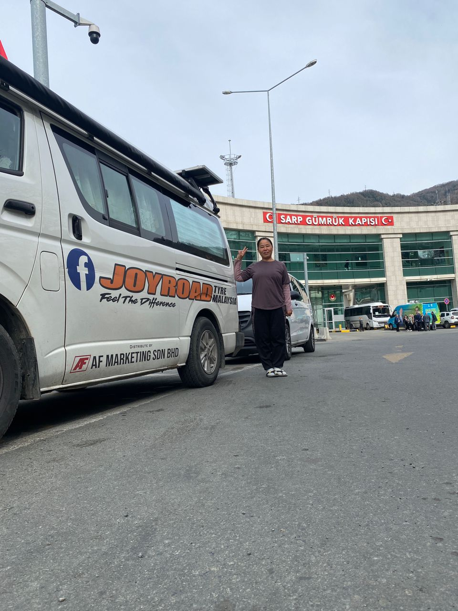

Real Story · 中文
Turkey 的第一站，不是冲刺，是休息。
13 March 2024，我从 Georgia 进入 Turkey。 在 Sarp Gümrük Kapısı，我和 Toyotaki 停在 border building 前拍了一张照片。 那一刻我心里是 grateful 的。 Georgia 和 Turkey 两边的 customs officers 都很 friendly， 过关过程让我觉得比较安心。
前几天从 Armenia 到 Georgia，再从 Georgia 进入 Turkey， 身体其实已经很累。 山路、边境、没有 roaming、借 WiFi 找路，这些事情都不是大事故， 但一路累积起来，身体会知道。

Danzi Campsite
I needed the river to help me recover.
After entering Turkey, I decided not to continue rushing. I went to Danzi Campsite and stayed there on 13 March and 14 March. The campsite was along a flowing river.
I felt I needed the ions from the moving river, the sound of water, and the quiet beside it to heal the tiredness and exhaustion from the previous days.
English Memory Summary
A friendly crossing, then a necessary pause.
On 13 March 2024, Tuzi entered Turkey through the Sarp border crossing. She felt grateful because the customs officers between Georgia and Turkey were friendly, and the crossing did not add more stress after a rushed period through Armenia and Georgia.
Instead of immediately pushing onward, she chose to rest at Danzi Campsite on 13 and 14 March. The campsite was beside a flowing river, and the river became part of the recovery: a place to calm the body, release exhaustion, and prepare for the next Turkey road.
Heart Statement
有些边境过了以后，不是马上继续跑，而是先让身体回来。
Turkey opened with friendly officers, then gave me water, sound, and two days to rest.